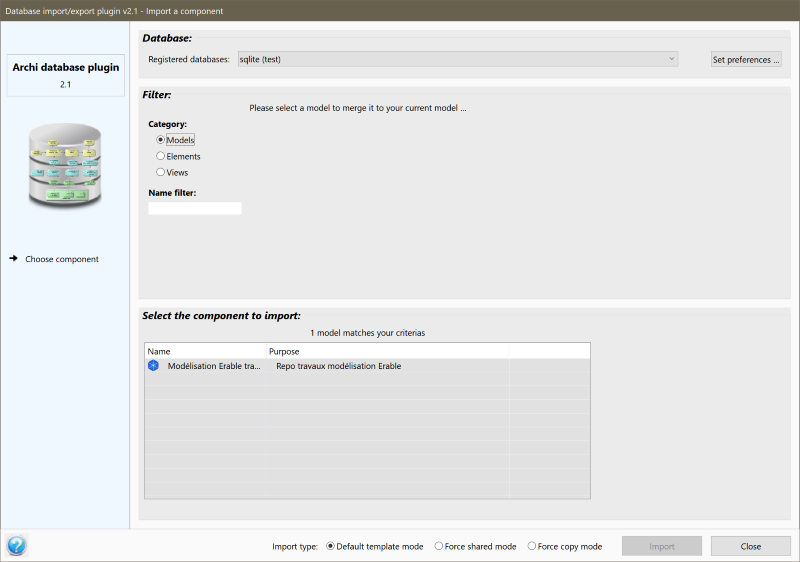
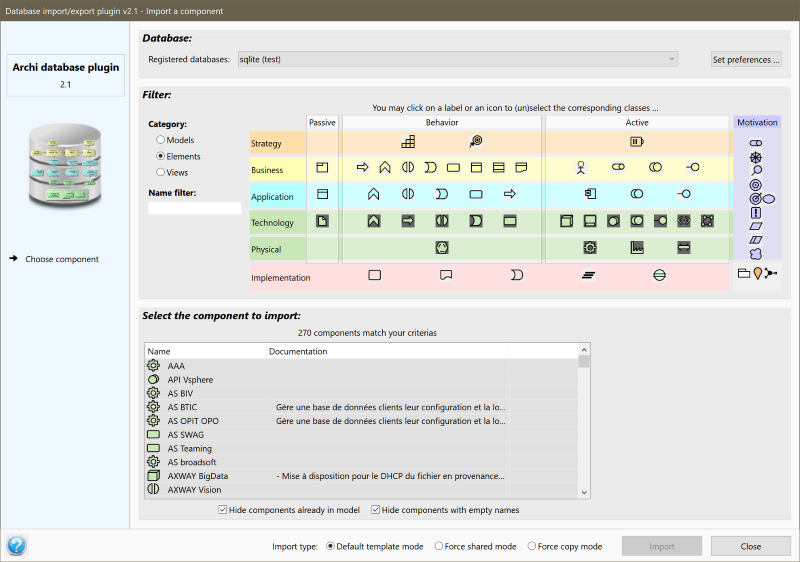
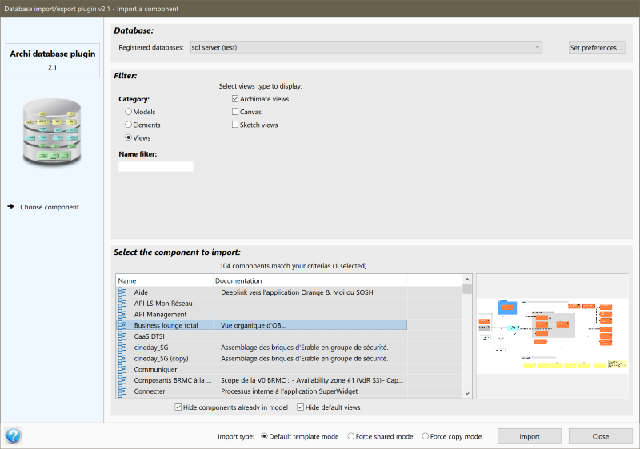

Import components from a database
This page describes how to import components from a database.
To import a component, you need to right-click on any existing model's component and select the Import components from database context menu option.
The graphical interface
As every window of the database plugin, the export window is split in 5 zones:
- The left zone shows the plugin's logo and the list of actions.
- The right hand-side of the export window is split in 3 zones:
- The database selection
- The class of components to import
- The components to import
The database selection
This section allows to select the database from where the components should be imported. The databases are presented in the order defined on the preference page.
The "set preferences" button allows to directly open the preference page to update the database list or set preferences.
Please note that the Neo4j databases are not presented here as only exporting is supported to Neo4j databases.
The class of components to import
At this stage, you need to choose if you wish to import a model (i.e. merge a model), an element or a view (at this time, folders are not supported):



A filter allows to show up the components whose name contain the content of the filter (the case is ignored). It is possible to use the percent sign (%) as a wildcard.
When the elements type is selected, you may choose as well the classes to list in the components table. You may select/unselect a class, a complete row or a complete column by clicking on it. Please be aware that the elements list can become huge, so it would be wise not to select too mny classes at the same time if you've got many elements in your database.
The components to import
The bottom part of the window lists the models, elements or views that correspond to your choice. You may then select one or several of them.
When a view is selected, a screenshot of the view is shown next to the table if the database contains views screenshots.When the mouse stands over a component, then a popup is shown with the component's properties (if it has got any).
To import the selected component(s), you may either double click in the table or click on the "Import" button.
The import modes
The import mode allows to specify how the components will be imported. Three modes are available:
- Force copy mode: in this mode, all the components will have a new ID that will be distinct from the one in the database. The imported components and the components in the database will therefore be independent: updating the ones will not impact the others.
- Force shared mode: in this mode, all the components will be imported with their existing ID from the database. All the components will therefore be shared across the models: the updates done on those components in one model will be seen across all the models where they are present.
- Default template mode: in this mode, which allows to mix copy and shared mode, the import mode is distinct for each component and depends on their properties:
- If the component has got a property called "template" with value "shared": then the component is imported in shared mode,
- If the component doesn't have a property called "template", or if its value is not "shared": then the component is imported in copy mode.
A "(copy)" mention is appended to all the components imported in copy mode. This mention can be modified or removed in the plugin's preferences.
Undo / redo
All the imports can be undone using the Ctrl-Z key or Archi's menu, and redone using the Ctrl-Y key or Archi's menu.